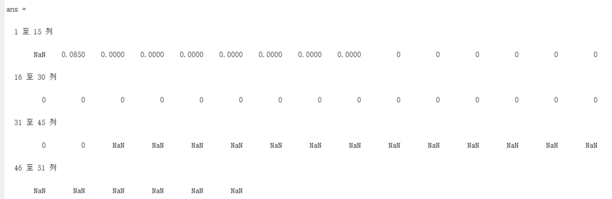

记录一下近期做项目时遇到的问题以及解决的全过程，思路说不定可以延申到其他的领域
从卫星信道说起
笔者研究生阶段所在的实验室，主要研究的内容是无线通信的信道建模，至于这个东西是什么，简而言之就是无线通信的信道建模（逃）。
（既然提到这个，以后说不定会开个坑简单科普下这个内容，帮自己捋清思路）
最近做的项目需要进行卫星信道模型的仿真，所以找了些信道的模型，把他们的概率密度函数(Probability Density Function，下文简称PDF)用Matlab弄出来，画个图啥的就能混过去了。
看上去还是蛮轻松惬意的活，做的时候却遇到了意想不到的麻烦，所以在这里把这个问题的出现、排查及解决过程整理下来，可以当作以后处理类似问题的样本。
现象及初步排查
问题出现
首先从出现问题的模型开始说起。这个模型叫做Corraza模型，用于描述卫星通信的信道特性。细节的东西不重要直接略过，它的PDF如下：
这里的I0是第一类零阶修正贝塞尔函数，这也是这次的核心问题之一。
另外，该函数里的其他参数都是卫星仰角的函数，所以只要给出自变量r和卫星仰角sita,那么该PDF的值就可以唯一确定。
看上去除了长了一点没有太大问题，直接Matlab开搞：
1 | function [pdf]=cm(r,sita) |
检查几遍没有问题，OK，开始画图：
这里显然可以看到有问题，作为概率密度函数，pdf的值不可能为负。接下来逐层排查问题：
负值的来源
观察PDF的形式，积分外的部分显然是一个正比函数，r取正值时必为正值，那么负值来源于积分内部。
再看被积函数，一个底数为e的指数函数，一个自变量的-3次方，这两项在自变量取正值时必为正，那么负值来源于贝塞尔函数I0。
google一下贝塞尔函数，找到了修正贝塞尔函数的形式：
显然它是指数增长形式且没有负值，这就怪了，笔者明明用的是修正贝塞尔函数但是为什么会出现负值呢？
再google一下Matlab里的贝塞尔函数，才发现笔者用的函数是besselj(nu,z)，这个是非修正的贝塞尔函数：
这就不奇怪了，那么解决也很简单，把besselj(nu,z)换成对应的besseli(nu,z)就可以了。
然而，真的会这么简单么(笑)
表层分析与解决
一波又起
如上文所示，把贝塞尔函数换成正确的形式，开始画图：
心 肺 停 止
出现了NaN，对于Matlab来说就是被积函数出现了NaN，既然如此，有必要看一下被积函数到底是什么样子了：
1 |
|
看上去好像还蛮正常的，输出一下函数值看看：
居然在第一个点出现了NaN，那么问题就很清晰了，被积函数在自变量为0时会出现NaN，所以在进行积分运算时，把积分下限稍微提高一点就可以了。
一波双起
把积分限从(0，inf)改为(0.01，inf)，再试一下：
好像正常了，然而：
需要观察一下在PDF自变量较大的时候被积函数的取值：
出现了不止一个NaN，那么可以推断，随着PDF自变量的增加，被积函数在取值较小时会出现NaN，那么提高积分下限的思路是没有问题的，但是提高多少，需要稍微操作一下：
1 | s=0:0.01:5; %s作为自变量 |
再次测试：
终于上面提到的各种问题都得到了解决，开始画图：
美丽的图像，似乎一切都解决了。
那么，为什么会出现这样的错误呢？
迁移，并深入本质
果然，一切还没结束
在笔者打算提交报告跑路的前一刻，突然想起来之前的另一个信道模型C.Loo似乎也用错了贝塞尔函数，那么这边自然也需要修正一下了。
首先，C.Loo模型的PDF如下：
修正后的Matlab代码如下：
1 | function [pdf] = clm(r,alpha,psi,MP) |
事不宜迟，试试效果如何：
没想到又一次出现同样的问题，而且这个问题明明已经解决了，感觉瞬间又回到了原点。
没办法，继续来吧，从观察被积函数开始：

这一次，问题同时出现在了积分上下限，这就意味着如果再使用刚刚的办法，笔者将不得不计算极大范围内的数据，这个显然超出了手边这台小破笔记本的能力。
那么，只能深挖一层，从更深处解决问题了。
探索问题的本质
现在，问题变成了如何寻找一个取值的上限，使该上限内的自变量都可以让被积函数取非NaN的值，且尽可能的准确。
那么，需要思考一个问题，NaN是如何得到的？
回到被积函数中，被积函数包括一个e为底的负指数函数以及一个第一类零阶修正贝塞尔函数，前者的取值会无限趋近于0，后者根据前面的调查，它是指数增加型的函数，取值会趋于无穷大。那么这个NaN会不会是因为负指数函数趋向0，贝塞尔函数趋近无穷而导致出现了0*inf的结果呢？
那么，只要找到贝塞尔函数中的函数值在Matlab中从非inf值到inf值的分界点，那么它就可以换算为一个通用的积分上限。
开始测试：
可以看到，从自变量大约为700左右起(更精确的计算后得到是700.92)，该贝塞尔函数的取值会从非inf值变成inf值。那么积分的上限就可以进行换算了：
1 |
|
在C.Loo模型中同时进行上下限的限制，最终得到结果：
似乎一切正常，那么开始画图：
图像有一些小瑕疵，可能是由于限制了积分上下限导致的，但是整体看起来很美，这个问题就先放着吧，以后再说。
写在最后
至此，这个问题算是告一段落，笔者的报告也顺利完成提交完毕了。这个问题看起来其实还是比较简单的，并没有使用特别复杂的处理方式，但是这个由表至里、由浅至深的思维方式及顺序还是具有一定的参考价值的，希望在以后处理类似的问题时笔者也可以顺着这样的思路，尽可能深入到问题的本质中去吧。
路还很长，生命不息，思考不止